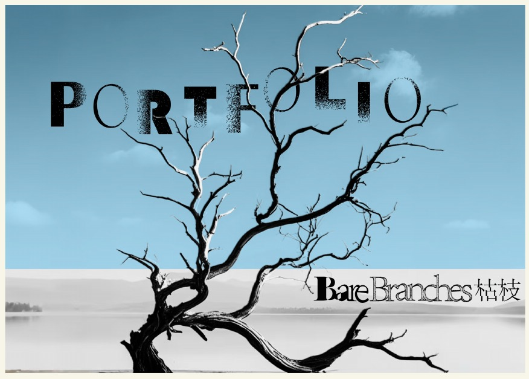
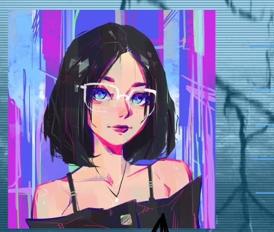

一位正在路上的创意实践者

NOTES ✳
ABOUT ME 02 / 08
你好，我是靖瑜。
用文字理解人，用视觉讲述故事。
我是北师香港浸会大学，公共关系与广告学的2028届学生
我具备良好的文字功底与创意策划能力，曾以编剧身份获得校园短视频大赛最佳创意奖、中国文化创意大赛一等奖(亚军)
除了熟练运用Adobe Creative Suite(PS/AI),Figma等设计工具，我还擅长将商业目标精准转化为视觉语言
在校期间，我曾获得第11届中国数据新闻大赛国家一等奖，第24届上海国际大学生广告节优胜奖，并在第十届中国大学生公共关系策划创业大赛中获得三等奖
在课余时间，我拥有丰富的广告设计与全媒体运营经验。个人小红书拥有1千+粉丝，单篇笔记最高浏览量达4万+
内容累计浏览量达10万+
同时我在全英教学的环境里，英语专业课均达A
持有MOS365专家级Word/Excel证书，熟练Office办公软件与Power BI数据分析
我学习能力强，善于适应变化，个性开朗且做事认真严谨，期待和大家共同创造积极的影响与贡献。
文字 · 策划 · 视觉 · 数据
THE COLLECTION五条路径 · 从这里出发03 / 08
SELECT A STAMP
把灵感，寄往下一站。
每一枚邮票，都是一个独立的探索入口。
一场关于创意的慢速旅行JINGYU ZHAO ✳ 2028